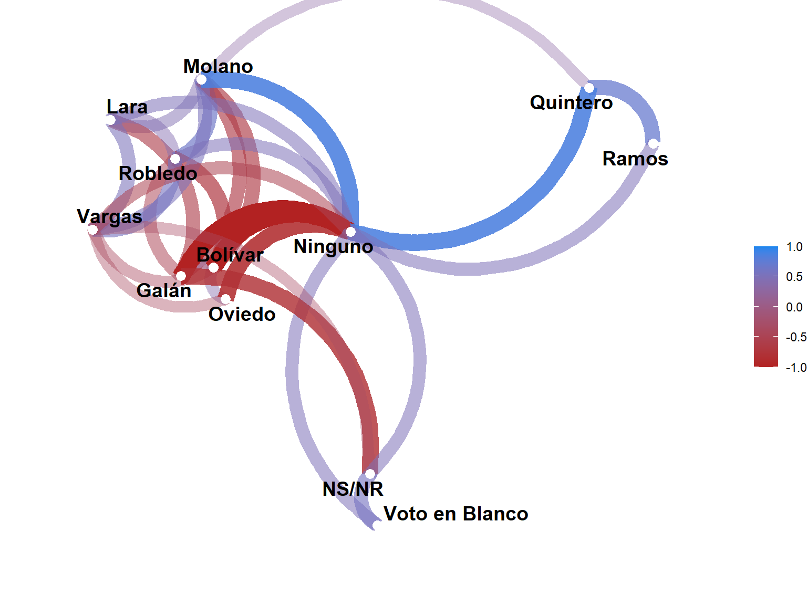
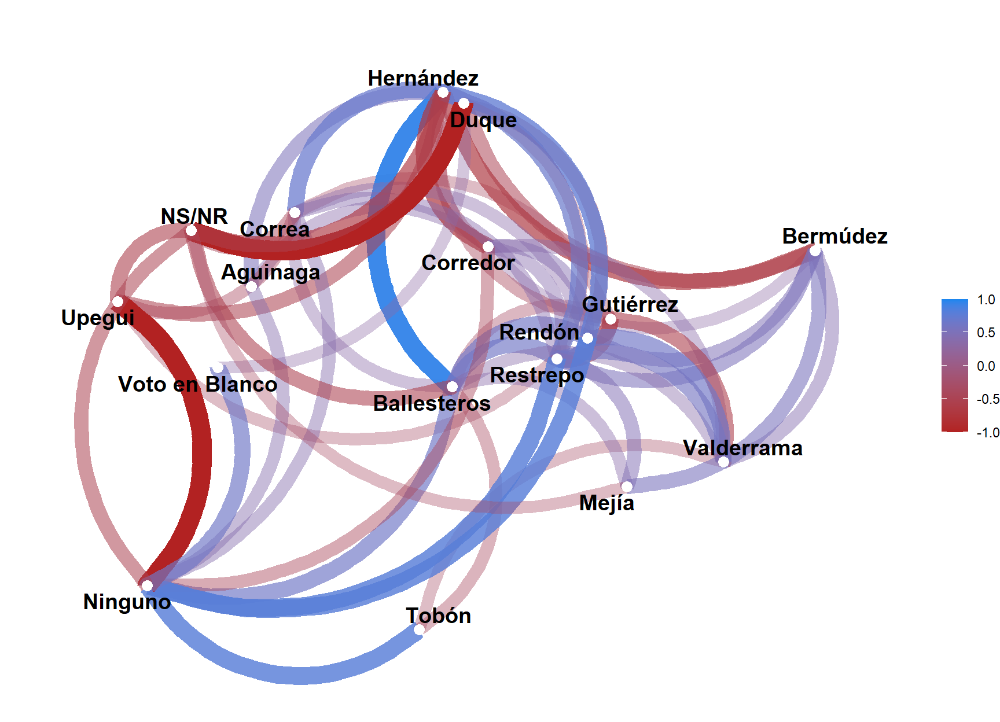
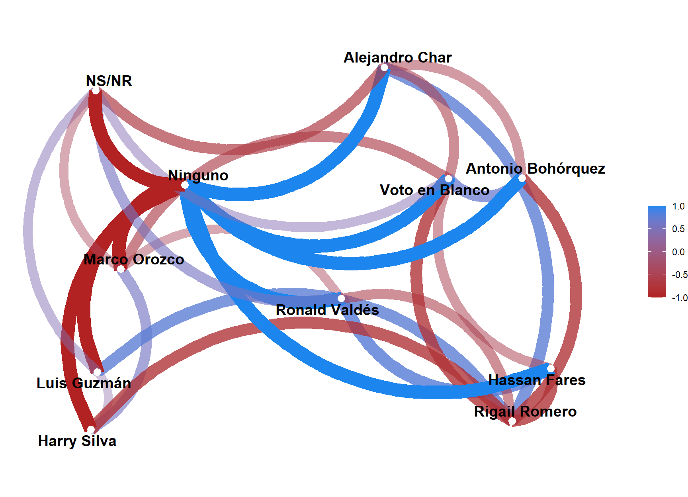

Código
library(tidyverse)
library(splines)
library(broom)
library(glue)
library(corrr)
theme_set(theme_minimal())library(tidyverse)
library(splines)
library(broom)
library(glue)
library(corrr)
theme_set(theme_minimal())source("funciones-r/02-exploratorio/distPlot.R", encoding = "UTF-8")
source("funciones-r/02-exploratorio/seriePlot.R", encoding = "UTF-8")
source("funciones-r/02-exploratorio/seriePlotIndividual.R", encoding = "UTF-8")
source("funciones-r/02-exploratorio/distPlotIndividual.R", encoding = "UTF-8")
source("funciones-r/02-exploratorio/corPlot.R", encoding = "UTF-8")tabla_bogota <-
read_csv("datos-encuestas/tabla_bogota.csv")
tabla_medellin <-
read_csv("datos-encuestas/tabla_medellín.csv")
tabla_cali <-
read_csv("datos-encuestas/tabla_cali.csv")
tabla_bquilla <-
read_csv("datos-encuestas/tabla_bquilla.csv")
tabla_cartagena <-
read_csv("datos-encuestas/tabla_cartagena.csv")
tabla_bucaramanga <-
read_csv("datos-encuestas/tabla_bucaramanga.csv")lista_tablas <- list(
bogota = tabla_bogota,
medellin = tabla_medellin,
cali = tabla_cali,
bucaramanga = tabla_bucaramanga,
cartagena = tabla_cartagena,
barranquilla = tabla_bquilla
)distPlot(ciudad = "bogota", tablas = lista_tablas)distPlot(ciudad = "medellin", tablas = lista_tablas)distPlot(ciudad = "cali", tablas = lista_tablas)distPlot(ciudad = "bucaramanga", tablas = lista_tablas)
distPlot(ciudad = "barranquilla", tablas = lista_tablas)distPlot(ciudad = "cartagena", tablas = lista_tablas)distPlotIndividual(ciudad = "bogota",
candidato = "Oviedo",
tablas = lista_tablas)distPlotIndividual(ciudad = "medellin",
candidato = "Gutiérrez",
tablas = lista_tablas)distPlotIndividual(ciudad = "cali",
candidato = "Alejandro Eder",
tablas = lista_tablas)distPlotIndividual(ciudad = "bucaramanga",
candidato = "Horacio Serpa",
tablas = lista_tablas)distPlotIndividual(ciudad = "barranquilla",
candidato = "Alejandro Char",
tablas = lista_tablas)distPlotIndividual(ciudad = "cartagena",
candidato = "Dumek Turbay",
tablas = lista_tablas)seriePlot(ciudad = "bogota", tablas = lista_tablas)seriePlot(ciudad = "medellin", tablas = lista_tablas)seriePlot(ciudad = "cali", tablas = lista_tablas)seriePlot(ciudad = "bucaramanga", tablas = lista_tablas)seriePlot(ciudad = "barranquilla", tablas = lista_tablas)seriePlot(ciudad = "cartagena", tablas = lista_tablas)seriePlotIndividual(ciudad = "bogota",
candidato = "Oviedo",
tablas = lista_tablas)seriePlotIndividual(ciudad = "medellin",
candidato = "Gutiérrez",
tablas = lista_tablas)seriePlotIndividual(ciudad = "cali",
candidato = "Alejandro Eder",
tablas = lista_tablas)seriePlotIndividual(ciudad = "bucaramanga",
candidato = "Horacio Serpa",
tablas = lista_tablas)seriePlotIndividual(ciudad = "barranquilla",
candidato = "Alejandro Char",
tablas = lista_tablas)seriePlotIndividual(ciudad = "cartagena",
candidato = "Dumek Turbay",
tablas = lista_tablas)corPlot(ciudad = "bogota", tablas = lista_tablas)
corPlot(ciudad = "medellin", tablas = lista_tablas)
corPlot(ciudad = "cali", tablas = lista_tablas)corPlot(ciudad = "bucaramanga", tablas = lista_tablas)corPlot(ciudad = "barranquilla", tablas = lista_tablas)
corPlot(ciudad = "cartagena", tablas = lista_tablas)